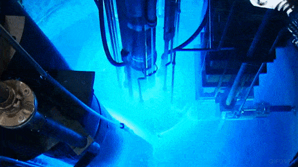

In June of 2020, I started a job as a web developer for the for the MU Career Center. I help maintain a Wordpress website. So far, the position has consisted mostly of updating pages and links. I also wrote a python script to help convert files from the .boxnote file format to the .docx file format to aid in the transition from Box to Microsoft Teams that I think ended up being pretty cool.
I lead an app development group on campus. We don't have a website right now, but it's part of a parent organization called the Mizzou Computing Association. The group is made up mostly of people who know very little about app development, and not all of them are able to develop for iOS because you must be running MacOS on your computer. I started leading the group in the winter of 2020 and ran into all of these problems during the semester. Going forward, I'm going to transition to building Flutter apps, so that everyone in the group can work together on a single codebase instead of building separate apps for iOS and Android.
When I first enrolled at Mizzou, I was a chemistry major. During the summer before my freshman year, I had the opportunity to try my hand at research at MURR, which is a research reactor near Mizzou's campus. You can read more about this here - just CTRL + F and search for my name. I thought the research was interesting and I enjoyed my time at MURR, but I decided I didn't feel passionately about research in chemistry. The highlight of the summer was when I got to look down into the reactor. When particles from the reactor travel faster than light in water, a blue light is emitted. This is called Cherenkov radiation, and I was able to see it in person! We couldn't take pictures, but I found this GIF on Google.
